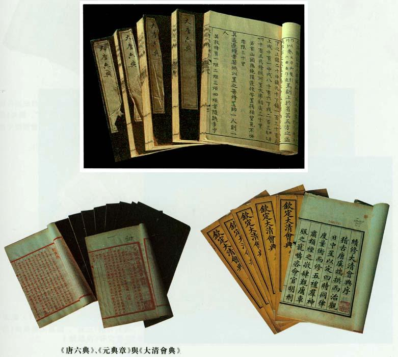

6. 政 书
《四库全书总目》“史部”“政书类”：
志艺文者，有“故事”一类。其间，祖宗创法，奕叶慎守，是为一朝之故事；后鉴前师，与时损益者，是为前代之故事。史家著录，大抵前代事也。《隋志》载《汉武故事》，滥及稗官；《唐志》载《魏文贞故事》，横牵家传。循名误列，义例殊乖。今总核遗文，惟以国政朝章六官所职者入于斯类，以符《周官》故府之遗。至仪注、条格，旧皆别出，然均为成宪，义可同归。惟我皇上制作日新，垂谋册府，业已恭登新籍，未可仍袭旧名。考钱溥《秘阁书目》有“政书”一类，谨据以标目，见综括古今之意焉。
会 典

返回课件首页
参加讨论